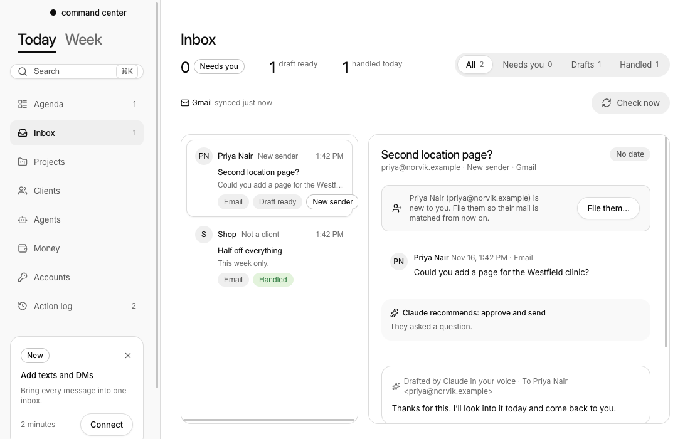
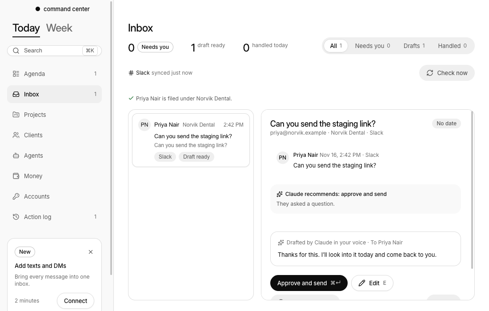

Inbox: Gmail and Slack
Your work email and Slack in one inbox, sorted for you. Free rules file the obvious, Claude sorts the rest if you let it, and nothing is ever sent but a reply you approve.

How it works
- On this computer. Mail is read here and kept here, in your workspace. Each source uses an app you make yourself, for free, so no one else's app holds your mail.
- Replies only. Command Center sends only replies, only to where the message came from (its sender and thread, never an address the words ask for), and only on your click.
- Mail is data. A message that tries to give Claude instructions changes nothing.
- Who's who. A sender is matched to a client by their exact address, then by the client's own domain (for you to confirm), never by the name an email shows. Someone new comes to you to file: a client, a new client, or not a client.
Connect Gmail
About 10 minutes. You make a sign-in client in Google Cloud, with no billing.
- At console.cloud.google.com, signed in with your work account, make a project called Command Center.
- APIs & Services › Library: turn on the Gmail API.
- Google Auth Platform: name it Command Center and set its audience to Internal. (Personal Gmail? See Google won't let me choose Internal.)
- Data access: add
gmail.readonly(to read your mail and past replies) andgmail.send(to send a reply you approve). Nothing else. - Clients › Create client › Desktop app. Paste its client ID and secret into Command Center and choose Save client.
- Choose Sign in with Google. Google's page opens in your own browser; pick your work account and allow it. Your password never reaches Command Center.
The first read takes the last 3 days of your inbox and about 20 of your sent replies (to learn your voice); after that it keeps up every couple of minutes.
Connect Slack
About 5 minutes. You make an app in your own Slack workspace.
- At api.slack.com/apps, create an app from scratch called Command Center, in your workspace.
- Socket Mode: turn it on and make the app-level token it offers (
connections:write). New messages arrive without a public server. - OAuth & Permissions › User Token Scopes: add
im:read,im:history,mpim:read,mpim:historyfor your direct and group messages;users:readandusers:read.emailto match people to clients;chat:writeto send a reply you approve; and, only if you want channels,channels:read,channels:history,groups:read,groups:history. - Event Subscriptions: turn it on and subscribe, on behalf of users, to
message.imandmessage.mpim(plusmessage.channelsandmessage.groupsfor channels). - Install to Workspace. Paste the app-level token (
xapp-…) and the User OAuth Token (xoxp-…) into Command Center and choose Connect Slack.
Slack channels
Once Slack is connected, choose List my channels. Turn Read on for each channel you want, Slack Connect channels shared with clients included, and say whose channel each is. Only the channels you pick are read. Your team's talk in a channel that isn't to you is filed by rule; a client's message, someone new, or anything naming you comes to you.

Texts (SMS, iMessage, WhatsApp) aren't read: there's no free, official way in for your own number.
Sorting
Every new message is sorted into what needs you and what doesn't:
- Free rules first. Newsletters, promotions, social and forum mail, mailing lists, no-reply senders, and anything you already answered are filed for free, with an undo. A client's mail is never filed by rule.
- Then Claude, if Claude sorts new mail is on: it sorts the rest into needs you, draft ready, or no reply needed.
- Then you. With Claude off, the rest waits for you, sorted by nothing but the rules.
Drafts in your voice
With Claude drafts replies on, a message that needs an answer gets a Reply card with Claude's draft, written in your voice from your own past replies (Settings › Sources › Inbox lists the samples, and you can remove any). With it off, the card has an empty reply for you to write. Either way, Edit shows exactly what will be sent and nothing goes until you approve it.
Both switches ask before turning on, with the most a single call can cost. See what it costs.
The 24-hour watch
A client's message (or someone new at a client's domain) gets a reply deadline 24 hours after it arrived, weekends included, unless they asked sooner. It rises to the top of the agenda in its last 4 hours. Your reply from Command Center, Gmail or Slack marks it answered; when someone writes back on something you were waiting on, it comes back to you.
On a message
- Approve and send the reply, or Edit it first.
- No reply needed clears it, by you, with an undo.
- Snooze it, or file a new sender.
Settings › Sources › Inbox keeps the week's record: sorted by Claude, by rule, by you, waiting, replies sent, and any client message past 24 hours.